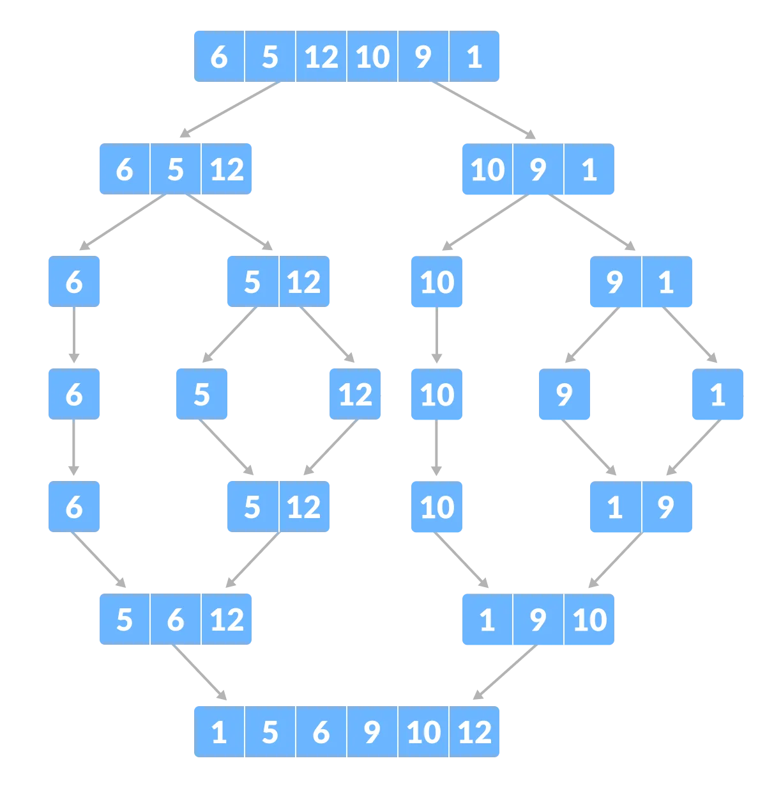

Sponsored by Replit

Sorting
16pts
Python
Java
C++
Algorithms
Data
What is sorting, how to sort, and mergesort.
Sorting is one of the most fundamental tasks every programmer should understand (and know how to solve). The most common variation of sorting is: Given an array of integers, order the array in ascending order. For example, if we are given [1, 3, 5, 2, 4], we want to sort it into [1, 2, 3, 4, 5].
Note: Most languages include a built-in library for sorting, but it’s essential to understand the underlying mechanism for such a critical algorithm.
The most intuitive sorting algorithm that closely matches how humans sort is selection sort. Selection sort essentially finds the smallest element and sets it as the 1st element. Then, it finds the 2nd smallest element and sets it as the 2nd element, and so on. Formally, selection sort follows this flow:
- Set the unsorted window (the portion of the array that is unsorted) as indices 0 to N-1
- Iterate through the array and find the smallest element in the unsorted window
- Swap the smallest element with the first element in the unsorted window
- Add 1 to the beginning of the previous unsorted window’s range
- Repeat steps 2-4 until the window is the last element in the array
Here is what selection sort’s implementation looks like:
Code:
arr = [5, 6, 2, 4, 3, 1]
for i in range(6):
min_element = arr[i]
min_idx = i
# i and 6 are the unsorted window's range
for j in range (i+1, 6):
if arr[j] < min_element:
min_element = arr[j]
min_idx = j
arr[i], arr[min_idx] = arr[min_idx], arr[i]
print(arr)
> [1, 2, 3, 4, 5, 6]
Code:
int[] arr = {5, 6, 2, 4, 3, 1};
for(int i = 0; i < 6; i++) {
int min_element = arr[i];
int min_idx = i;
// i and 6 are the unsorted window's range
for(int j = i+1; j < 6; j++) {
if(arr[j] < min_element) {
min_element = arr[j];
min_idx = j;
}
}
int temp = arr[i];
arr[i] = arr[min_idx];
arr[min_idx] = temp;
}
for(int x : arr) {
System.out.print(x + " ");
}
> 1 2 3 4 5 6
Code:
int arr[] = {5, 6, 2, 4, 3, 1};
for(int i = 0; i < 6; i++) {
int min_element = arr[i];
int min_idx = i;
// i and 6 are the unsorted window's range
for(int j = i+1; j < 6; j++) {
if(arr[j] < min_element) {
min_element = arr[j];
min_idx = j;
}
}
int temp = arr[i];
arr[i] = arr[min_idx];
arr[min_idx] = temp;
}
for(int x : arr) {
cout << x << " ";
}
> 1 2 3 4 5 6
The issue with using selection sort, however, is that it’s way too slow. Suppose
N
is the size of the array. In that case, every selection sort will take ~N2
operations to complete (it takes N
operations to find the minimum element, and you need to find the minimum element N
times, hence N*N
operations). Better sorting algorithms only need ~N*log2(N)
operations, which is significantly faster (~6k times faster for an array of size 100k). This next section will cover one particular sorting algorithm, mergesort, that operates at that speed.
Mergesort
Mergesort capitalizes on the idea that two sorted arrays can be “merged” into a single sorted array using
N
operations, where N
is the size of the merged array. This is performed by greedily adding the smallest element from both arrays (which can be determined in 2
operations because the arrays are sorted) to the merged array, then removing that element. The implementation of this operation looks like this:
Code:
def merge(L, R):
arr = [0] * (len(L) + len(R))
L_idx = R_idx = arr_idx = 0
while L_idx < len(L) and R_idx < len(R):
if L[L_idx] < R[R_idx]:
arr[arr_idx] = L[L_idx]
L_idx += 1
else:
arr[arr_idx] = R[R_idx]
R_idx += 1
arr_idx += 1
while L_idx < len(L):
arr[arr_idx] = L[L_idx]
L_idx += 1
arr_idx += 1
while R_idx < len(R):
arr[arr_idx] = R[R_idx]
R_idx += 1
arr_idx += 1
return arr
Code:
static int[] merge(int[] L, int[] R) {
int[] arr = new int[L.length + R.length];
int L_idx = 0, R_idx = 0, arr_idx = 0;
while(L_idx < L.length && R_idx < R.length) {
if(L[L_idx] < R[R_idx]) {
arr[arr_idx] = L[L_idx];
L_idx++;
} else {
arr[arr_idx] = R[R_idx];
R_idx++;
}
arr_idx++;
}
while(L_idx < L.length) {
arr[arr_idx] = L[L_idx];
L_idx++;
arr_idx++;
}
while(R_idx < R.length) {
arr[arr_idx] = R[R_idx];
R_idx++;
arr_idx++;
}
return arr;
}
Code:
vector<int> merge(vector<int> L, vector<int> R) {
vector<int> arr(L.size() + R.size());
int L_idx = 0, R_idx = 0, arr_idx = 0;
while(L_idx < L.size() && R_idx < R.size()) {
if(L[L_idx] < R[R_idx]) {
arr[arr_idx] = L[L_idx];
L_idx++;
} else {
arr[arr_idx] = R[R_idx];
R_idx++;
}
arr_idx++;
}
while(L_idx < L.size()) {
arr[arr_idx] = L[L_idx];
L_idx++;
arr_idx++;
}
while(R_idx < R.size()) {
arr[arr_idx] = R[R_idx];
R_idx++;
arr_idx++;
}
return arr;
}
How does having the merge operation help? Three critical ideas make the merge operation useful for sorting:
- Arrays of size 1are “sorted.”
- You can split an array of any size into arrays of size 1by continuously splitting the array in half, then splitting those arrays in half, and so on. This takes ~Noperations in total to complete, distributed across ~log2(N)“layers” of splitting (see diagram below).
- An entire layer of Xarrays can be merged intoX/2arrays using ~Noperations. Since there arelog2(N)layers, this will, in total, take ~N*log2(N)operations.
So, the mergesort algorithm works in 2 phases:
- Split the original array in half a bunch of times until it’s all arrays of size 1. This will result in ~log2(N)layers
- Starting from the layer of arrays of size 1, merge arrays usingNoperations per layer until the starting layer is reached and the entire array is sorted
This is a visual depiction of mergesort:

Here’s what the implementation for mergesort looks like. These implementations uses a technique called sorting in-place, which means that no extra memory is allocated- everything happens to the original array:
Code:
# Python program for implementation of MergeSort
def mergeSort(arr):
if len(arr) > 1:
# Finding the mid of the array
mid = len(arr)//2
# Dividing the array elements
L = arr[:mid]
# into 2 halves
R = arr[mid:]
# Sorting the first half
mergeSort(L)
# Sorting the second half
mergeSort(R)
i = j = k = 0
# Copy data to temp arrays L[] and R[]
while i < len(L) and j < len(R):
if L[i] < R[j]:
arr[k] = L[i]
i += 1
else:
arr[k] = R[j]
j += 1
k += 1
# Checking if any element was left
while i < len(L):
arr[k] = L[i]
i += 1
k += 1
while j < len(R):
arr[k] = R[j]
j += 1
k += 1
# Code to print the list
def printList(arr):
for i in range(len(arr)):
print(arr[i], end=" ")
print()
# Driver Code
if __name__ == '__main__':
arr = [12, 11, 13, 5, 6, 7]
print("Given array", end="\n")
printList(arr)
mergeSort(arr)
print("Sorted array", end="\n")
printList(arr)
> Given array
> 12 11 13 5 6 7
> Sorted array
> 5 6 7 11 12 13
Credit: Mayank Khanna & GeeksForGeeks
> 12 11 13 5 6 7
> Sorted array
> 5 6 7 11 12 13
Code:
/* Java program for Merge Sort */
class MergeSort
{
// Merges two subarrays of arr[].
// First subarray is arr[l..m]
// Second subarray is arr[m+1..r]
void merge(int arr[], int l, int m, int r)
{
// Find sizes of two subarrays to be merged
int n1 = m - l + 1;
int n2 = r - m;
/* Create temp arrays */
int L[] = new int[n1];
int R[] = new int[n2];
/*Copy data to temp arrays*/
for (int i = 0; i < n1; ++i)
L[i] = arr[l + i];
for (int j = 0; j < n2; ++j)
R[j] = arr[m + 1 + j];
/* Merge the temp arrays */
// Initial indexes of first and second subarrays
int i = 0, j = 0;
// Initial index of merged subarry array
int k = l;
while (i < n1 && j < n2) {
if (L[i] <= R[j]) {
arr[k] = L[i];
i++;
}
else {
arr[k] = R[j];
j++;
}
k++;
}
/* Copy remaining elements of L[] if any */
while (i < n1) {
arr[k] = L[i];
i++;
k++;
}
/* Copy remaining elements of R[] if any */
while (j < n2) {
arr[k] = R[j];
j++;
k++;
}
}
// Main function that sorts arr[l..r] using
// merge()
void sort(int arr[], int l, int r)
{
if (l < r) {
// Find the middle point
int m =l+ (r-l)/2;
// Sort first and second halves
sort(arr, l, m);
sort(arr, m + 1, r);
// Merge the sorted halves
merge(arr, l, m, r);
}
}
/* A utility function to print array of size n */
static void printArray(int arr[])
{
int n = arr.length;
for (int i = 0; i < n; ++i)
System.out.print(arr[i] + " ");
System.out.println();
}
// Driver code
public static void main(String args[])
{
int arr[] = { 12, 11, 13, 5, 6, 7 };
System.out.println("Given Array");
printArray(arr);
MergeSort ob = new MergeSort();
ob.sort(arr, 0, arr.length - 1);
System.out.println("\nSorted array");
printArray(arr);
}
}
> Given array
> 12 11 13 5 6 7
> Sorted array
> 5 6 7 11 12 13
Credit: Rajat Mishra & GeeksForGeeks
> 12 11 13 5 6 7
> Sorted array
> 5 6 7 11 12 13
Code:
// C++ program for Merge Sort
#include <iostream>
using namespace std;
// Merges two subarrays of arr[].
// First subarray is arr[l..m]
// Second subarray is arr[m+1..r]
void merge(int arr[], int l, int m, int r)
{
int n1 = m - l + 1;
int n2 = r - m;
// Create temp arrays
int L[n1], R[n2];
// Copy data to temp arrays L[] and R[]
for (int i = 0; i < n1; i++)
L[i] = arr[l + i];
for (int j = 0; j < n2; j++)
R[j] = arr[m + 1 + j];
// Merge the temp arrays back into arr[l..r]
// Initial index of first subarray
int i = 0;
// Initial index of second subarray
int j = 0;
// Initial index of merged subarray
int k = l;
while (i < n1 && j < n2) {
if (L[i] <= R[j]) {
arr[k] = L[i];
i++;
}
else {
arr[k] = R[j];
j++;
}
k++;
}
// Copy the remaining elements of
// L[], if there are any
while (i < n1) {
arr[k] = L[i];
i++;
k++;
}
// Copy the remaining elements of
// R[], if there are any
while (j < n2) {
arr[k] = R[j];
j++;
k++;
}
}
// l is for left index and r is
// right index of the sub-array
// of arr to be sorted */
void mergeSort(int arr[],int l,int r){
if(l>=r){
return;//returns recursively
}
int m =l+ (r-l)/2;
mergeSort(arr,l,m);
mergeSort(arr,m+1,r);
merge(arr,l,m,r);
}
// UTILITY FUNCTIONS
// Function to print an array
void printArray(int A[], int size)
{
for (int i = 0; i < size; i++)
cout << A[i] << " ";
}
// Driver code
int main()
{
int arr[] = { 12, 11, 13, 5, 6, 7 };
int arr_size = sizeof(arr) / sizeof(arr[0]);
cout << "Given array \n";
printArray(arr, arr_size);
mergeSort(arr, 0, arr_size - 1);
cout << "\nSorted array \n";
printArray(arr, arr_size);
return 0;
}
> Given array
> 12 11 13 5 6 7
> Sorted array
> 5 6 7 11 12 13
Credit: Mayank Tyagi & GeeksForGeeks
> 12 11 13 5 6 7
> Sorted array
> 5 6 7 11 12 13
Note: Built-in libraries usually implement a much more complex sorting algorithm for additional speed gains in certain scenarios.
Sorting is a very common task in programming, often combined with other algorithms (such as binary search, which you will see in the next article) to create powerful performance gains.
You can play with all the code we've used in this article on Replit: